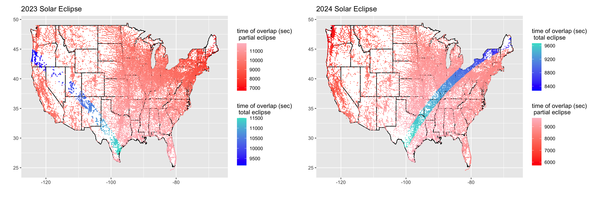

This data has information about the paths of the solar eclipses on October 14, 2023 and April 8, 2024 in the United States. The eclipse datasets were accessed via the TidyTuesday project (R for Data Science community), Week of April 9, 2024. The underlying data originate from NASA’s Scientific Visualization Studio.
# tidy 2024 datatot_24 <- eclipse_total_2024 %>%mutate(time = eclipse_6 - eclipse_1, eclipse ="total") %>%select(state, name, lat, lon, time, eclipse)part_24 <- eclipse_partial_2024 %>%mutate(time = eclipse_5 - eclipse_1, eclipse ="partial") %>%select(state, name, lat, lon, time, eclipse)eclipse_24 <-rbind(tot_24, part_24) %>%mutate(time =as.numeric(time))# plot 2024 datalibrary(ggnewscale)states <-map_data("state")twenty_four <-ggplot(states) +geom_polygon(fill ="white", color ="black",aes(long,lat, group = group)) +geom_point(data =filter(eclipse_24, lat <51& lat >24& lon <0& eclipse =="total"), aes(x = lon, y= lat, color = time), size =0.001) +scale_colour_gradientn(colors =c("blue", "turquoise")) +labs(color ="time of overlap (sec)\n total eclipse") +new_scale_color() +geom_point(data =filter(eclipse_24, lat <51& lat >24& lon <0& eclipse =="partial"), aes(x = lon, y= lat, color = time), size =0.001) +scale_colour_gradientn(colors =c("red", "pink")) +ggtitle("2024 Solar Eclipse") +labs(x ="", y ="", color ="time of overlap (sec)\n partial eclipse")# tidy 2023 datatot_23 <- eclipse_annular_2023 %>%mutate(time = eclipse_6 - eclipse_1, eclipse ="total") %>%select(state, name, lat, lon, time, eclipse)part_23 <- eclipse_partial_2023 %>%mutate(time = eclipse_5 - eclipse_1, eclipse ="partial") %>%select(state, name, lat, lon, time, eclipse)eclipse_23 <-rbind(tot_23, part_23) %>%mutate(time =as.numeric(time))# plot 2023 datastates <-map_data("state")twenty_three <-ggplot(states) +geom_polygon(fill ="white", color ="black",aes(long,lat, group = group)) +geom_point(data =filter(eclipse_23, lat <51& lat >24& lon <0& eclipse =="total"), aes(x = lon, y= lat, color = time), size =0.25) +scale_colour_gradientn(colors =c("blue", "turquoise")) +labs(color ="time of overlap (sec)\n total eclipse") +new_scale_color() +geom_point(data =filter(eclipse_23, lat <51& lat >24& lon <0& eclipse =="partial"), aes(x = lon, y= lat, color = time), size =0.001) +scale_colour_gradientn(colors =c("red", "pink")) +ggtitle("2023 Solar Eclipse") +labs(x ="", y ="", color ="time of overlap (sec)\n partial eclipse")# put plots togethertwenty_three + twenty_four +plot_layout(ncol =2)

Mt. Vesuvius
This dataset contains information about seismic events detected at Mount Vesuvius in Italy. The data was accessed via TidyTuesday, Week of May 13, 2025, based on data from the Italian Istituto Nazionale di Geofisica e Vulcanologia (INGV). The raw data was saved as individual CSV files from the GOSSIP website and some values were translated from Italian to English.
library(sf)library(ggspatial)# drop NA lat/long since we're plotting on a mapvesuvius <- vesuvius |>drop_na(latitude, longitude)# convert data to be compatible with sfvesuvius_sf <-st_as_sf(vesuvius, coords =c("longitude", "latitude"), crs =4326)# map for energy releasemagnitude <- vesuvius_sf |>ggplot() +geom_sf(aes(color = duration_magnitude_md), size =1, alpha =0.6) +scale_color_gradient(low ="#3B4CC0", high ="#FADA48") +theme_minimal() +theme(axis.text.x =element_text(vjust =0.5, hjust=1, size =5),axis.title.x =element_text(vjust =-3),axis.text.y =element_text(size =5)) +labs(title ="Energy Release",x ="Longitude", y ="Latitude")# map for yearyear <- vesuvius_sf |>ggplot() +geom_sf(aes(color = year), size =1, alpha =0.6) +scale_color_gradient(low ="#3B4CC0", high ="#FADA48") +theme_minimal() +theme(axis.text.x =element_text(vjust =0.5, hjust=1, size =5),axis.title.x =element_text(vjust =-3),axis.text.y =element_text(size =5)) +labs(title ="Year",x ="Longitude", y ="Latitude")# map for depth of seismic eventdepth <- vesuvius_sf |>ggplot() +geom_sf(aes(color = depth_km), size =1, alpha =0.6) +scale_color_gradient(low ="#3B4CC0", high ="#FADA48") +theme_minimal() +theme(axis.text.x =element_text(vjust =0.5, hjust=1, size =5),axis.title.x =element_text(vjust =-3),axis.text.y =element_text(size =5)) +labs(title ="Depth",x ="Longitude", y ="Latitude")# put them all togethermagnitude + year + depth +plot_layout(ncol =2) +plot_annotation("Earthquakes Around Mt. Vesuvius", caption ="Energy release measured by 'duration magnitude' (Md)")
H.E.L.P. (Health Evaluation and Linkage to Primary Care)
The HELP dataset comes from a longitudinal study of adults experiencing housing instability and substance use disorders in Boston in the early 2000’s, designed to evaluate factors influencing linkage to medical and social services after enrollment. It includes detailed measures of incarceration history, substance use, mental health (including CES-D depression scores), and time to successful linkage to care. The dataset can be accessed here.
Code
library(wesanderson)library(mosaic)library(circlepackeR)# dataHELPfull <-read.csv("HELPdata_2025.csv")HELPfull <- HELPfull |>mutate(dayslink =as.numeric(dayslink),linkstatus =as.numeric(linkstatus),group =as.factor(group))# bin the variables to "create" hierarchy# each bin 19 monthsHELPfull$jail_bin <-cut(HELPfull$jail_mos, breaks =3, include.lowest =TRUE, labels =c("Low Jail Time", "Medium Jail Time", "Higher Jail Time"))# each bin 14 yearsHELPfull$mj_bin <-cut(HELPfull$h10_lt, breaks =3, include.lowest =TRUE, labels =c("Low Marijuna Use", "Medium Marijuana Use", "Higher Marijuana Use"))# each bin about 20 pointsHELPfull$dep_bin <-cut(HELPfull$ces_d, breaks =3, include.lowest =TRUE, labels =c("Low Depression Score", "Medium Depression Score", "Higher Depression Score"))# create data with subgroupscircle_data <- HELPfull |>group_by(jail_bin, mj_bin, dep_bin) %>%summarise(value =mean(dayslink, na.rm =TRUE), .groups ="drop")library(data.tree)# circlepackeR requires hierarchycircle_data$pathString <-paste("world", circle_data$jail_bin, circle_data$dep_bin, circle_data$mj_bin, sep ="/")tree_data <-as.Node(circle_data)library(htmltools)# plotp <-circlepackeR(tree_data, size ="value", color_min ="#91BAB6", color_max ="#F03801")tagList(tags$h3(style ="color:#000000; font-family:Ipsum Larem; font-weight:400;","Circle Pack of Jail Time, Depression Score, and Marijuana Use"), p)
Circle Pack of Jail Time, Depression Score, and Marijuana Use
When we stratify the cohort by incarceration exposure, depressive symptom burden, and marijuana-use history, the average time to linkage differs across subgroups—suggesting these risk/complexity dimensions may be associated with slower (or faster) linkage.
Rotaries and Roundabouts
This dataset contains information about roundabout intersections across the world, (though we will focus on the United States). The data were accessed via TidyTuesday (Week of December 16, 2025) and are drawn from the roundabouts R package developed by Emil Hvitfeldt. The underlying database was compiled by Kittelson & Associates and includes detailed records on the location, design, configuration, and construction year of over 20,000 roundabouts globally.